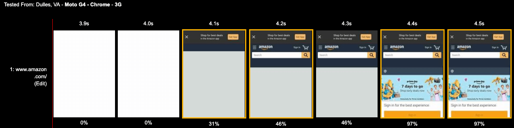

Web Performance Workshop
Simon Hearne
Web Performance Solutions Engineer @ Akamai
Agenda
Introduction
We know that speed matters
| The BBC loses an additional 10% of users for every additional second it takes to load | |
| Pinterest improved load time by 40% and saw 15% increase in SEO traffic and 15% increase in conversions | |
 |
Financial Times added a one second delay to every page view and saw a 4.9% drop in the number of articles users read over a 7 day window |
 |
For every 100ms decrease in homepage load speed, Mobify's customer base saw a 1.11% lift in session based conversion |
Measuring Performance
Measurement:
- Rule-based
- Ad hoc
- Synthetic
- Real User
- Application
Measurement:
- Rule-based
- Ad hoc
- Synthetic
- Real User
- Application
Google Lighthouse
In Chrome Developer Tools / Audits
Google Lighthouse
CLI
Google PageSpeed Insights
Measurement:
- Rule-based
- Ad hoc
- Synthetic
- Real User
- Application
Developer Tools
Identify large & slow resources
Developer Tools
Identify rendering & JavaScript bottlenecks
Works on real devices too
developers.google.com/web/tools/chrome-devtools/remote-debugging/
WebPageTest.org
WPT Waterfall
Analyse resources over the network.
WPT Filmstrip
Compare visual output to the network waterfall.
Host your own WPT
Test internal environments, bulk tests, API key management.
Ad Hoc Summary
- Results in seconds
- High level of detail
- Does not scale well
- Relies on device emulation
Measurement:
- Rule-based
- Ad hoc
- Synthetic
- Real User
- Application
Synthetic Monitoring
Actively measure performance
Regular tests on fixed pages / journeys, using browsers hosted on servers.
Good for testing availability and infrastructure performance.
Synthetic Monitoring Tools
* other services are available
Synthetic Summary
- Tests production environment
- Active monitoring 24x7
- Controlled environment - easy to spot changes
- Small number of test locations
- Does not measure user experience
- Difficult to test pre-production
Measurement:
- Rule-based
- Ad hoc
- Synthetic
- Real User
- Application
Real User Monitoring (passive)

Collect performance data from every visitor
Real User Monitoring Tools
* other services are available
Real User Monitoring Summary
- Measures real user experience!
- Correlate performance with business metrics
- Global coverage
- Requires implentation in client-side code
- May be blocked by tracker blockers
Measurement:
- Rule-based
- Ad hoc
- Synthetic
- Real User
- Application
Measurement:
- Rule-based
- Ad hoc
- Synthetic
- Real User
- Application
The Network
Images
The rise of Images
The rise of Images
Desktop Image Bytes are up 330% since 2011
Mobile Image Bytes are up 1050% since 2011
Bitmap vs. Vector
Bitmap (PNG / JPG)
Grid of pixels, does not scale well
Vector (SVG)
Shapes defined in XML, scales infinitely!
Bitmap Scaling
150px
20kB
300px
27kB
450px
86kB
Vector Scaling
150px
18kB
300px
18kB
450px
18kB
Choose Appropriate Formats
Photo Imagery
JPG
(lossy compression)
Icons & Graphics
SVG / PNG(lossless compression)
Animations

GIF / CSS(lossless compression)
Browser-Specific Formats
Chrome & Opera
Safari
Internet Explorer
Baseline vs. Progressive JPEGs
Optimising JPEG Images
- jpegtran - linux cmd-line
- imagemin - node module
- tinypng - web-based (yes for JPEGs!)
- squoosh.app - web-based
Optimising PNG Images
- OptiPNG - lossless, multiple binaries
- pngquant - lossy(!), multiple binaries
- tinypng - web-based
- squoosh.app - web-based
Optimising SVG Images
Responsive Images

Responsive web design presents an image problem.
Lazy-Loading Images

Allows the browser to determine which images to download immediately, based on viewport and connection speed.
Available in Chrome 76, polyfill with lazysizes.js
JavaScript
JavaScript
You’re building your own maze, in a way,
and you might just get lost in it.
Marijn Haverbeke, Eloquent JavaScript: A Modern Introduction to Programming
CSS & Fonts
Caching
Cache control headers
- cache-control
- last-modified
- etag
- pragma
- expires
- last-modified
Cache forever
Use for immutable, versioned assets. Best possible caching!
cache-control: immutable,
max-age=31536000
- Do not revalidate, even on page reload
- Cache for up to a year
Cache, with revalidation (1)
Use for assets which may change. Validation uses an extra round-trip.
cache-control: max-age:86400
ETag: "33a64...f89d4"
- Cache for up to a day
- Serve cached asset if ETag matches
Cache, with revalidation (2)
Use for assets which may change. Validation uses an extra round-trip.
cache-control:
max-age:86400
Last-Modified:
- Cache for up to a day
- Check if the resource has changed
Forced revalidation
Use for frequently updated assets (feeds, product lists)
cache-control: no-cache
ETag: "33a64...f89d4"
- Do not use without validation
- (must include a last-modified or ETag header)
Don't cache!
Use for sensitive responses (set-cookie, user-specific)
cache-control: no-store
- Do not store anything about the response
Caching Summary

CDN Considerations
- stale-while-revalidate
- vary
- no-transform
Devices üì±
Device Characteristics:
- Screen resolution (DPR)
- Processing (CPU & RAM)
- Mobile Network
- Browsing Context
Device Characteristics:
- Screen resolution (DPR)
- Processing (CPU & RAM)
- Mobile Network
- Browsing Context
Device Characteristics:
- Screen resolution (DPR)
- Processing (CPU & RAM)
- Mobile Network
- Browsing Context
Device Characteristics:
- Screen resolution (DPR)
- Processing (CPU & RAM)
- Mobile Network
- Browsing Context
Device Characteristics:
- Screen resolution (DPR)
- Processing (CPU & RAM)
- Mobile Network
- Browsing Context
Device Characteristics:
- Screen resolution (DPR)
- Processing (CPU & RAM)
- Mobile Network
- Browsing Context
Third-party Content
Third-party scripts account for
>70% of requests
Automation
Automation:
- Screen resolution (DPR)
- Processing (CPU & RAM)
- Mobile Network
- Browsing Context
Advanced Concepts
Bring on the workers!
- Web Worker
- Service Worker
- Edge Worker
Web Worker
- 100% extra threads! üíØ
- Logical separation of compute vs. UI
- postMessage communication is slow
- Only ArrayBuffers can be transferred for free
Service Worker
- Serves content even when off-line
- Proxy third-party requests and apply timeouts
- Augment requests to add context (e.g. image width)
- Does not work for first view
- Only one permitted per domain
- Hard to test & debug
Edge Worker
- Logic at the edge means ⬇️ latency
- Offload expensive logic from the client
- Lack of standards = vendor lock-in
- Basic functionality only - geo / user agent / cookies
Worker Summary
- Web Worker - offload intensive JS to another thread
- Service Worker - a JS proxy in your browser
- Edge Worker - serverless at the edge
Web Assembly (WASM)
CSS Paint API
CDN Optimisations
Future
Thank you üôè
shearne@akamai.com